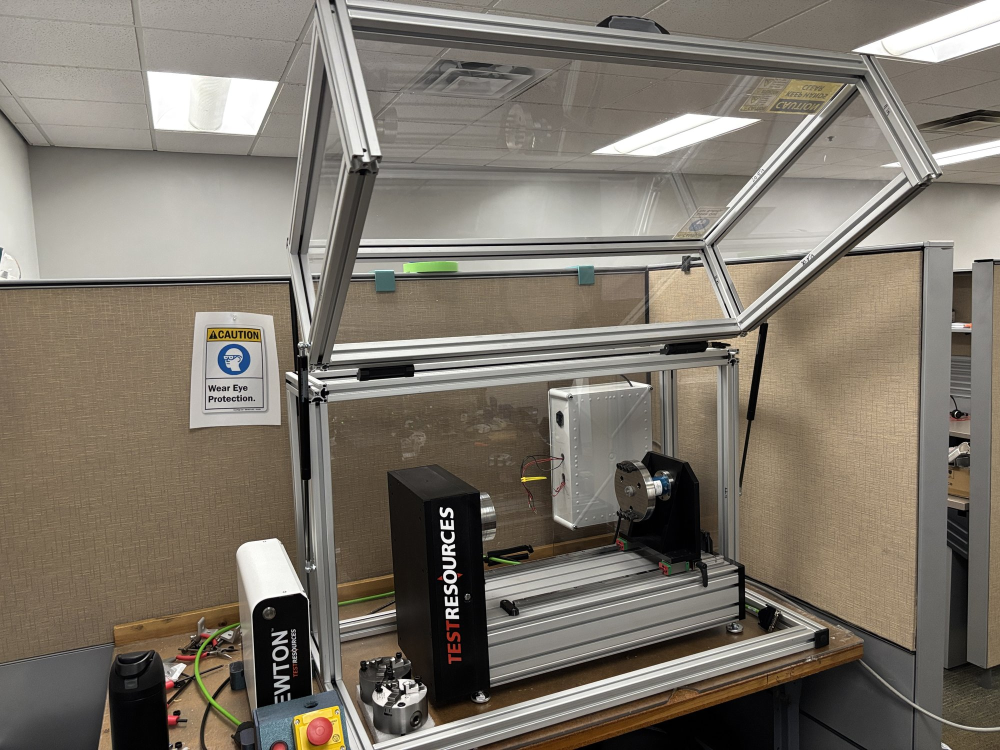
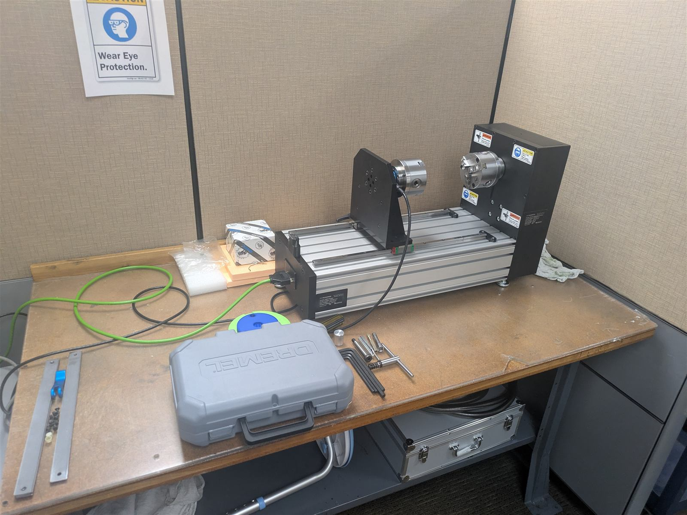
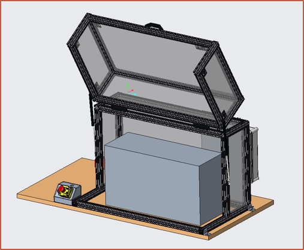
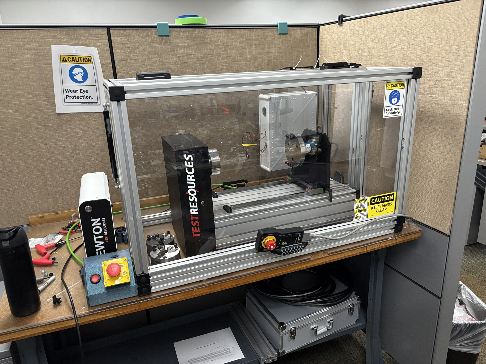
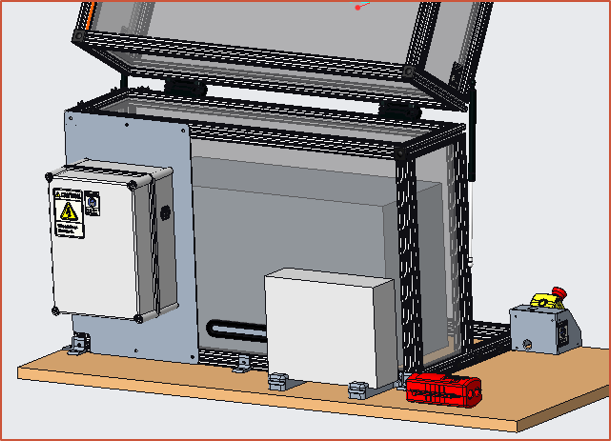
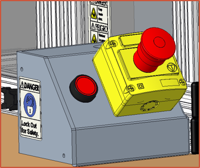
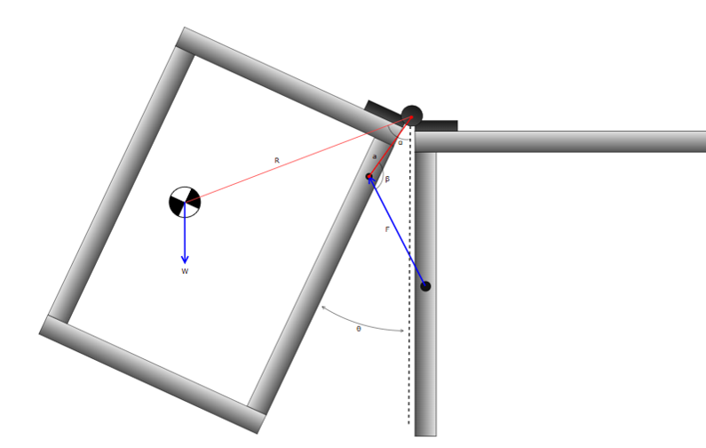
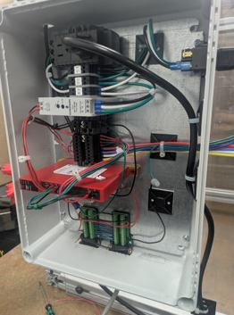

Project Bastion
I co-led the development of a machine-guarding system for a torsion-testing machine at dormakaba, taking the project from requirements and concept development through CAD, engineering analysis, procurement, fabrication, assembly, and final validation.




A critical test machine could not be used safely
The torsion tester had exposed rotating components and did not have the guarding and energy-isolation provisions needed for continued testing. The solution had to prevent access to hazardous motion while still preserving visibility, specimen access, emergency-stop functionality, lockout/tagout access, and the existing machine itself.
Key requirements
- Prevent access to hazardous motion
- Stop hazardous motion if the guard opened
- Provide accessible emergency-stop and LOTO functions
- Maintain test visibility
- Allow routine specimen installation and cable access
- Fit the existing tester and workbench
Co-leading the project from requirements through validation
I worked with one other mechanical engineering intern as the project co-leads. My work included requirements development, mechanical concept development, Creo CAD, gas-strut analysis, DFMEA, technical documentation, procurement, manufacturing coordination, assembly, and validation. I also worked with electrical and EHS personnel on the machine-safety portion of the system.
Requirements
SRD, review cycles, verification criteria.
Mechanical Design
Frame, clear guarding, lid, mounting and access features.
Analysis
Kinematics, static moments, and parametric gas-strut study.
Risk
DFMEA and safety-function thinking.
Build
Cut plans, purchasing, drilling, assembly, troubleshooting.
Validation
Requirement checks, inspection, and final signoff.
Why the final design looks the way it does
Aluminum T-slot extrusion frame
Provided a modular structure that could be assembled without welding and adjusted during fabrication and final setup. The adjustability also gave useful margin when tuning the lid and gas-strut mounting locations.
Clear polycarbonate guarding
Created a physical barrier around the hazardous motion while preserving visibility of the test and fitting cleanly into the extrusion frame.
Hinged operator access lid
Routine specimen installation required frequent access, so a removable fixed panel would have been inefficient. A hinged lid preserved access while keeping the enclosure intact.
Gas-strut assisted opening
The lid needed to be manageable for the operator and stay supported when open. I analyzed the geometry rather than choosing mounting points by trial and error.
Interlocked guard + E-stop
A physical barrier alone was not enough. The design incorporated safety controls so opening the guard or activating the E-stop removed power from hazardous motion.
Design around the existing tester
The guard needed to improve safety without modifying the torsion tester itself, which drove the surrounding-frame approach and several interface decisions.


The project was requirements-driven, not just CAD-driven
A major part of the project was converting broad safety needs into specific, testable requirements. Those requirements went through multiple review cycles, and the verification matrix defined whether each item would be demonstrated, inspected, tested, or analyzed.
Making sure the lid behaved correctly before building it
The lid needed to satisfy two opposite conditions: it could not lift itself when closed, but it needed enough assistance to remain supported when fully open. I modeled the gravitational moment from the lid and the opening moment from two gas struts throughout the operating range.
I then varied lid weight, frame spacing, and gas-strut mounting locations to identify a range of configurations that satisfied closed-position, open-position, and strut-travel requirements.

Designing something that could actually be built
After design approval, I translated the CAD into fabrication information for the frame, panels, mounting features, and purchased components. I coordinated with internal manufacturing resources, drilled and tapped extrusion, prepared polycarbonate panels, and helped assemble the final structure.

From an unusable test bench to a working guarded system
The completed system was assembled, wired, reviewed, inspected, and placed into service. Verification covered operator access, guard-interlock behavior, emergency-stop behavior, visibility, safety distances, LOTO accessibility, guard removal, and compatibility with the existing tester.
The biggest lesson was that a good design is not only one that works in CAD. It also has to be understandable to the people building it, adjustable enough to handle real variation, usable by the operator, and verifiable against the original problem.
Full dormakaba Internship Portfolio
I originally documented my 2026 dormakaba internship in a separate portfolio, including Project Bastion and additional internship work.
View Internship Archive →